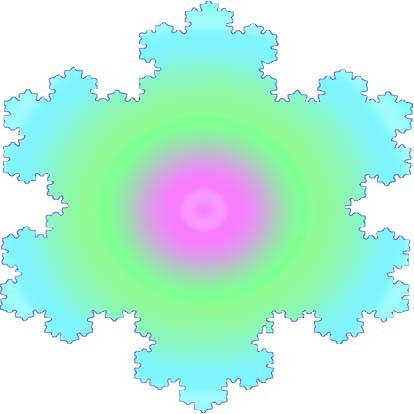
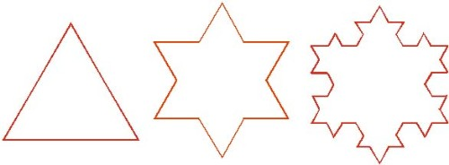
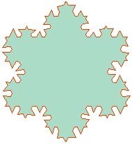

雪花曲線

圖1：漂亮的雪花。它是怎麼畫成。
雪花曲線是一種奇妙的曲線，假設剛落在地面的雪花是正三角形。接著每隔一秒鐘就在正三角形的每一邊的中央三分之一處產生一個新的正三角形，如此繼續下去，最初的三個階段看起來是這樣的（如圖2）。

圖2
第0秒 第1秒 第2秒
再重複一次這個過程，這個曲線將選顯得更美麗（如圖3）。如此繼續下去，雪花就愈來愈漂亮了（參考圖1）。

圖3：漂亮的雪花
按照這個方法不斷執行下去，你願意曲線有多長，它就有多長。雖然可劃在一張A4紙上，但它的長度可以從地球到月球的距離阿！。
雪花曲線是美麗的「病態曲線」，之所以稱為病態是它們奇異的特性，如果照上面的過程無限制繼續劃下去，其長度將是趨於無限大，但它卻只能圍成一塊有限的區域，也就是說它的面積是有限的。現在我們來證明無窮雪花的曲線是無限長，而其所圍的面積卻是有限的。
1. 假設初始（第0秒）雪花（正三角形）每邊長度是n，共3邊，則雪花（S0）周長是3n，面積（A0）是n2，
2. 第1秒雪花（星形），雪花共有3×4邊，邊場長縮為原來的1/3，因此周長（S1）市是原來的4/3倍，即S1是S0+3n/3 = S0+ S0/3；面積（A1）增加1/3，即A0 +3/9A0。
3.第2秒雪花（雪花形），雪花共有3×42邊，邊長又縮為第1秒的1/3(即第0秒的1/32)於是周長S2變為S0+ S0/3+4 S0/32；面積（A2）是A0 +A0 + 3(A0/9)+ 4∙3(1/9)2 A0
（參考圖3）
綜合上述，雪花曲線產生過成中第0、1、2、3、……、i、……的邊數依次為：
3、3×4、3×42、3×43、……、3×4i-1、……
1.當雪花的邊無限增加時，雪花周長也變成無限大。
由上面圖形及邊數我們可歸納，第i秒之周長為：3n + 3∙n/3+ 3∙4∙n/32+
3∙42∙n/33+……+ 3∙4i-1∙n/3i= 3n(4/3)i
i→∞。
；也就是說 當i→∞時，3n(4/3)
2. 當雪花的邊無限增加時，雪花周長雖然會變成無限大，但其面積為有限只有原來的8/5倍。
由上面圖形我們可歸納，雪花的面積為：
A= A0 + (1/9) ×3 A0+ (1/9)2×3×4 A0+ (1/9)3 ×3×42A0+……(1/9)i ×3×4i-1+……
=1 A0+3/9〔1+(4/9)+(4/9)2+……(4/9)i-1+……〕 A0
= 1+( 3/9)×1/(1-4/9)= 1+3/5=8/5
第2秒鐘
圖4：參考圖2，得上圖
綜合上述，雪花曲線產生過成中第0、1、2、3、……、i、……的邊數依次為：
3、3×4、3×42、3×43、……、3×4I-1、……
因此我們可推論：
1.當雪花的邊無限增加時，雪花周長也變成無限大。
由上面圖形及邊數我們可歸納，第i秒之周長為：3n + 3∙n/3+ 3∙4∙n/32+
3∙42∙n/33+……+ 3∙4i-1∙n/3i= 3n(4/3)i
；也就是說 i→∞。當i→∞時，3n(4/3)
2. 當雪花的邊無限增加時，雪花周長雖然會變成無限大，但其面積為有限只有原來的8/5倍。
由上面圖形我們可歸納，雪花的面積為：
A= A0 + (1/9) ×3 A0+ (1/9)2×3×4 A0+ (1/9)3 ×3×42A0+……(1/9)i ×3×4i-1A0+……
=1 A0+3/9〔1+(4/9)+(4/9)2+……(4/9)i-1+……〕 A0
= 1+( 3/9)×1/(1-4/9)= 1+3/5=8/5